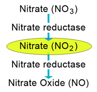

В третьей части речь пойдет о мощном вазодилататоре нитроглицерине, используемом не только для купирования приступов стенокардии, но и при других состояниях, а также о средстве для лечения подагры колхицине, антимитотическая активность которого активно изучается в последние годы при терапии онкозаболеваний, а нейтрофильные свойства — для защиты сердечно-сосудистой системы.
Нитроглицерин
Нитроглицерин был впервые использован Уильямом Мерреллом для купирования приступа стенокардии. Открытие было опубликовано в 1878 г., однако только в 2002 г. было установлено, что фермент, митохондриальная альдегид дегидрогеназа, способна преобразовать нитроглицерин в мощный вазодилататор — оксид азота. Он по-прежнему рекомендуется большинством руководств для оказания экстренной помощи при стенокардии.

Исследователи продолжают искать новые области применения нитроглицерина и новые лекарственные формы. Например, было установлено, что нитроглицерин приводит к снижению резорбции костной ткани и способствует образованию костной ткани, поэтому в настоящее время изучаются возможности его использования для лечения вызванных сахарным диабетом язв стопы. Метаболический путь «нитрат-нитрит-оксид азота» рассматривался с точки зрения подхода к лечению метастатического рака предстательной железы. Представляют интерес данные, опубликованные в New York Times в 2010 г., о том, что 80% из почти 5 миллионов выписанных по рецептам таблеток нитроглицерина для сублингвального приёма не были одобрены, так как, согласно нормативам FDA, не требовалось одобрения на препараты, вышедшие на рынок до 1938 г.
В настоящее время существует несколько способов его применения, в том числе пероральный, внутривенный, сублингвальный, местный и ректальный. Нитроглицерин для ректального применения недавно был одобрен для купирования боли при анальных трещинах за счёт расслабляющего влияния оксида азота на внутренний анальный сфинктер.
Колхицин
Применение колхицина, содержащегося в безвременнике осеннем (Colchicum autumnale), датируется еще 1500 годом до нашей эры, и его первое зарегистрированное применение для лечения подагры относится к первому веку нашей эры.
Колхицин стал общедоступен после того, Администрация США по продуктам питания и лекарственным средствам (FDA) отнесла его к унаследованным лекарствам, которые не требуют одобрения и продавались до 1938 г. Однако в 2009 г. FDA предоставила ЮЭрЭл Фарма (URL Pharma) исключительную лицензию, и цена на его препарат под торговым названием Колкрис (Colcrys) выросла от 10 центов до 5 долларов за таблетку. Препарат может вызвать серьёзные нежелательные лекарственные реакции, в частности, при взаимодействии с кларитромицином, однако он остаётся важный лекарственным средством для лечения подагры и семейной средиземноморской лихорадки, а также полезен для лечения рецидивирующих афтозных язв. Кроме того, в настоящее время исследуется антимитотическая активность колхицина с точки зрения использования в терапии раковых заболеваний, а его нейтрофильные свойства изучаются для защиты сердечно-сосудистой системы. Недавно проведённое исследование показало полезные свойства этого препарат для лечения эндокардита.
Old Drugs That Are Still Good Drugs
Medscape